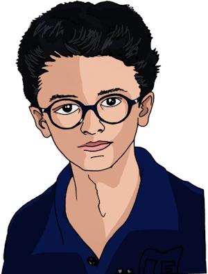

César Bistrucla
Lycéen à Paris XV, France
Né le 2 aout 2008

Formation initiale
Lycée Privé Paris
• 2025 classe de 2nde, option SNT
Collège Privé Paris
• 2024 classe de 3eme, latin2
• 2023 classe de 4eme, classe à projet, chorale, latin1
• 2022 classe de 5eme, LV2 Espagnol
• 2021 classe de 6eme, LV1 Anglais
École primaire publique, Orgerus Béhoust
• 2020 classe de CM2
• 2019 redoublement classe de CM1
• 2018 classe de CM1
• CE2 - CE1 - CP...
on peut remonter plus loin mais ce n'est peut-être pas nécessaire...
• Stage en entreprise
Et bien non ! Je ne suis pas allé chez Papa-Maman, j'ai trouvé un stage à la SPA et j'ai découvert que j'avais un bon contact avec les animaux.
• Délégué de classe
ils ont voté pour moi, et j'ai fait du mieux possible, enrichissant...
Compétences et aptitudes
Tout au long du collège j'ai pu pratiquer les disciplines d'enseignement général, et en particulier :
• Littérature française, je lis les grands classiques de la mythologie et de la littérature, en particulier Jules Verne et Alexandre Dumas
• Mathématiques, il y en a partout... le monde entier serait-il gouverné par les maths ?
• Musique : amateur de Jazz et de Blues, je vais avec plaisir aux concerts
• Arts plastiques : dessin, peinture et modelage, j'aime toucher à tous les matériaux
• Électronique : je sais assembler un kit et faire du brasage à l'étain de bonne qualité
• Anglais : je pratique souvent en regardant les films américains en VO
• Espagnol : les séjours en Espagne me font pratiquer l'oral
• DNB Diplôme National du Brevet des Collèges - session 2025
• Certification PIX niveau 255
• EVA Langues niveau 4
• ASSR : je suis initié au code de la route et prépare mon permis de conduire
Expériences et activités
Voyages de découverte, séjours linguistiques
Franchement de toute ma scolarité s'il y a quelque chose à retenir c'est bien ça : les supers voyages de classe !
• Mont Saint-Michel en 6eme
• parcours Accrobranche en 5eme
• Séjour linguistique en Angleterre en 3eme
• Séjour à Rome en 5eme
• Séjour ski en 4eme
• Vacances au camping de Séville, Andalousie, chaque année
Visites culturelles, et autres activités
C'est l'avantage de vivre à Paris, il y a un nombre incroyable de belles sorties culturelles
• Musée du Louvre
• Musée des Arts et métiers
• Exposition the art of the brick Lego
• Salon de l'agriculture Paris
• Abonné aux médiathèques de la ville, je suis à l'aise en recherche documentaire et j'emprunte régulièrement des ouvrages
• Pratiques artistiques
Joue du piano au conservatoire, participe à la chorale et dessine régulièrement
• Activités en club
Bon c'est pas encore fait mais l'année prochaine je m'inscris quelque part...
• Sports pratiqués
Basket, natation, cyclisme, marche en randonnées
• Compétences en informatique, création numérique
Utilisation de Sketchup, Office 365, Scratch...
• Baby-sitting
je m'occupe de ma petite sœur et occasionnellement je fais du baby-sitting pour des amis de la famille.
Réalisations, fabrications
• Fabrication d'un jeu de plateau : vibreur Bug Attack
• Fabrication d'une maquette de pont en treillis
• Conception d'un boîtier design pour clé USB avec Sketchup
• Installation d'arts plastiques
• Exposé de sciences sur le thème de l'espace avec un diaporama Powerpoint
• Fabrication d'un écran pour mini-hologramme
• Design architectural d'une maison parasismique avec Sketchup
• Utilisation d'une carte micro:bit et makey-makey
• Montages et expériences de sciences
• Programmation d'un jeu de plate-forme avec Scratch
• EPI : machines à dessiner
Diplômes, prix et distinctions
• PIX niveau 255
• "Les Félicitations" au bulletin du 3eme trimestre
• Livret de compétences cycle IV complété à 80%
• ASSR réussie sans faute
• Premier flocon au ski
• Attestation de natation sur 1000m nage libre
• Brevet de secouriste niveau 1
Galerie
voir la page "Mes créations" >>
César B. créateur de Totor-design
mise à jour 2024/07/22